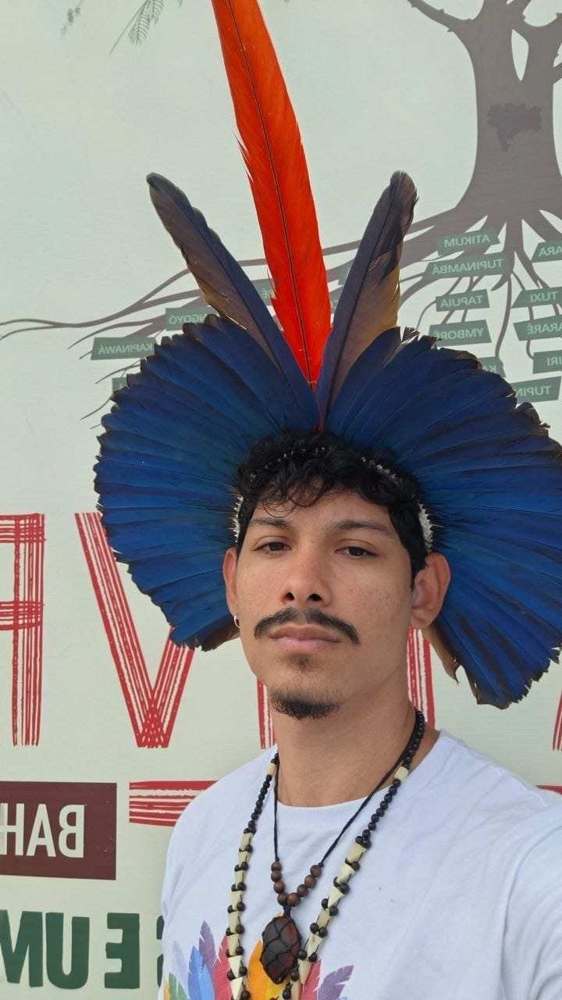
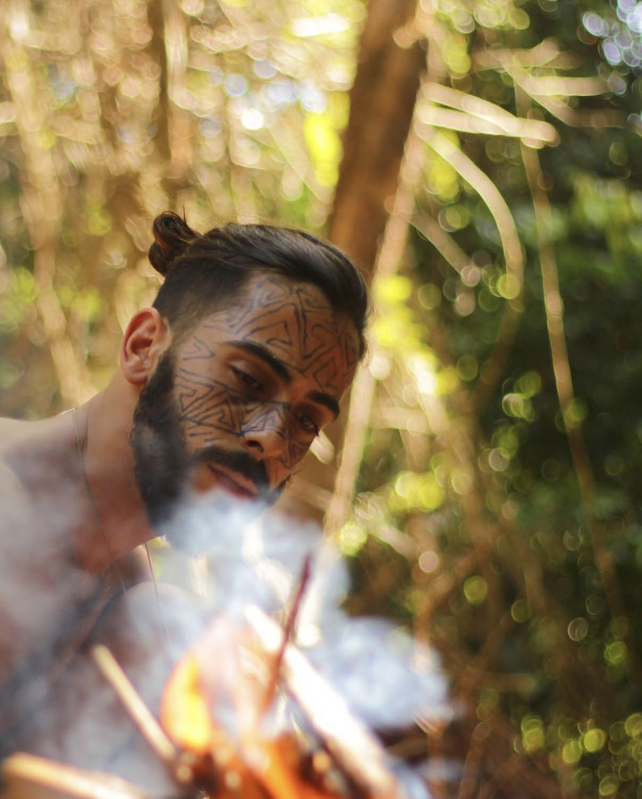
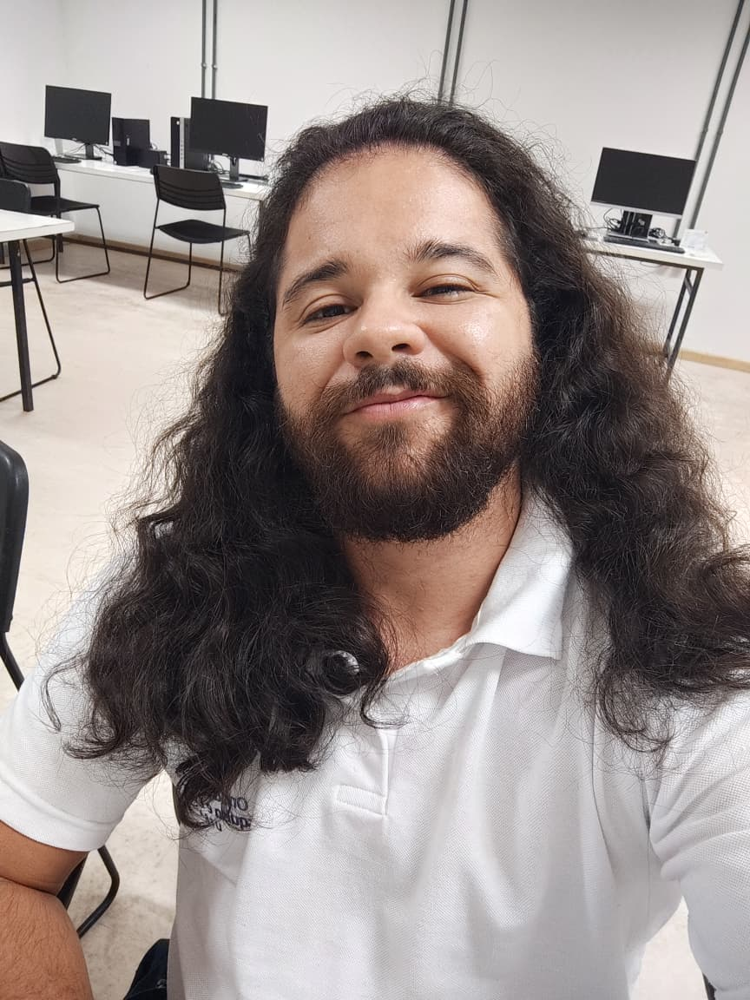

Nossa Equipe
A Plataforma Livre Nação Yuxibu nasce da articulação entre povos indígenas, Universidade e sociedade civil, fortalecendo a conexão floresta-cidade por meio de tecnologia ética e governança colaborativa.

Allan Thales
analista de TIXXXXXXXXXXXXXXXXXXXXXX

Aurélio Heckert
ProgramadorXXXXXXXXXXXXXXXXXXXXXX

Caio Almeida
Engenheiro de softwareXXXXXXXXXXXXXXXXXXXXXX
Débora Abdalla
Coordenação GeralProfessora Doutora Titular do Departamento de Computação Interdisciplinar da UFBA e coordenadora do projeto Plataforma Livre Nação Yuxibu.

Diego Sabot
Pesquisador IHCProfessor Doutor - UFBA
Emily Mendes
PsicólogaPsicóloga (CRP 03/29752). Atua no cuidado ético e acompanhamento dos participantes da Nação Yuxibu, realizando anamneses, entrevistas e orientações prévias.
Gabriela Almeida
Bolsista de extensãoPesquisadora do grupo de desenvolvimento da Plataforma Livre Nação Yuxibu do Onda Digital.
Ise Prazeres
Designer gráficoDesigner e profissional de marketing com 15 anos de caminhada criativa. Ao longo de sua trajetória vem desenvolvendo projetos gráficos que unem estratégia, sensibilidade e estética.

Leonardo César
DesenvolvedorDesenvolvedor de software e integrante do grupo de desenvolvimento da Plataforma Livre Nação Yuxibu.

Pedro Tupinambá
Bolsista de extensãoPesquisadora do grupo de desenvolvimento da Plataforma Livre Nação Yuxibu do Onda Digital.

Solon
IndigenistaCoordenador da comunicação da Plataforma Livre Nação Yuxibu.
Thiago Magalhães
AdvogadoBacharel em Direito e Licenciado em Filosofia pela Universidade Estadual de Santa Cruz - UESC/BA. Advogado OAB/BA 40748 e integrante do grupo de pesquisa da Plataforma Livre Nação Yuxibu.

Túlio Augustos
Bolsista de extensãoAnalista de sistema e pesquisador em Codesign, atua no grupo de Design e Desenvolvimento da Plataforma Livre Nação Yuxibu

Valeria Rosa
pesquisadora ihcProfessora Doutora da UESB e integrante do grupo de pesquisa da Plataforma Livre Nação Yuxibu